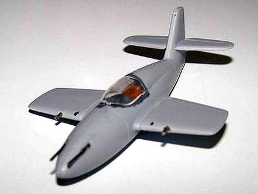
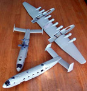
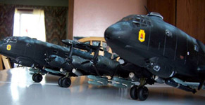

1/72 Junkers Ju-290Z Zwilling Conversion
Images and text Copyright � 2005 by Mike Glinski
Developmental Background
It was 1943 and the War situation for the Luftwaffe was in dire straits. As a result of the death of Gen. Wever, a strong proponent of large, strategic bombers, Germany possessed virtually no large, four-engined planes. The only exceptions were the Focke-Wulf Fw200 Condor (a civil airliner pressed into military duty) and the He 177 (a bomber so prone to engine fires it was given the nickname �Flaming Coffin.�) As a result in an attempt to fill this gap, a number of outlandish schemes were put forth. Very few of these �wonder planes� even made it to the prototype stage, and the worsening War situation for Germany at this time rendered any real testing impossible.
The Idea
I�m a big fan of Luft �46 kits, oddball aircraft, and little-known aerial projects, and I find a real joy in bringing these strange concoctions to life in plastic. So of course it got my attention when, surfing the web, I found a very strange picture of a German paper project that was previously unknown to me: the amazing Junkers Ju 290Z Zwilling.
The Junkers Ju 290 �Seeadler� was developed as a replacement for the inadequate Fw 200 in anti-shipping and ocean reconnaissance duties. Only about 60 were built, though, and too late to turn the tide.
With what little information I could obtain I learned the Ju 290Z was a proposal to further increase the range and lifting capabilities of the basic Ju 290 by joining two airframes with a common center wing. The idea was not new, and had been demonstrated in several other projects (most notably the He 111Z Glider Tug). The idea was generally sound, and more or less successful. But nothing had ever been attempted with aircraft this large before, and I can just imagine the massive stresses involved with the center wing, especially seeing as how the tails were left unconnected. Because of these reasons, the Zwilling was passed over in favor of the Ju 390, a six-engined stretched version of the 290 that was a bit less radical. Nothing came of either project.
I saw the project, and couldn�t help but try to build it. Despite the size, it wouldn�t be that difficult of a project - it just involved leaving off a few interior details (guns, etc.), and scratch building a relatively tiny wing section. Most of the base kits could be built out of box after that.
To use as my base kits I went the easiest way possible- the newly released 1/72 Ju 290 kits from Revell-Germany. I�d heard that the kit was extremely comprehensive, well detailed, and worth the price. Besides, it was either that or some rare resin or Vacuform kits, two things I�ve never attempted. I figured I�d have enough hassle with the wing to worry about ill-fitting, complicated Vac or resin kits.
It was here my mind started running away from me. Since I was putting so much work into this thing, I thought, why not include a Me 328 parasite aircraft for the back of one fuselage? And deck it out with some anti-shipping ordinance and paint it in an anti-shipping scheme? And then, inspired by something I�d seen on the Internet, my greatest idea yet- with so may props (8) why not motorize them? Really make this a kit no one�s ever seen before. With a firm resolve, I sent in the payment for the kits, and waited.
The Kits
About two weeks later, the FedEx guy dropped off the three kits I ordered- the two Revell Germany 1/72 Ju 290 kits, and PM Models� 1/72 Me 328. My first impression went something like this- �Wow. That�s a bunch of plastic.� I won�t delve too deep into what�s in the box, but I will say that a vast majority of the parts were well detailed, and there were multitude of tiny detail parts (antennas, pitot tubes and such) that really served to finish the kit convincingly, more about that later.
The Me 328 was a bit more basic. I could count the number of parts on my fingers. Detail was much more basic, but it would do fine for what I needed it for. The main reason I used this kit was because it contained parts for the short winged version, the version shown in an artist�s rendering of the Ju 290Z. And besides, it was a whole lot cheaper than the Huma Me 328 kits. Overall I was impressed. I got my knife, fitted it with a new No. 11 blade, and got to work.
Plastic Surgery
The Wing � Part I
While most aircraft modelers start in the cockpit, I decided to begin with the hardest part- the modified center wing. If this didn�t work, then going on would be, well, pointless. I could at least salvage a single aircraft from the parts I had left if it didn�t. Knowing this, I proceeded to do the first major modification.
The wings were molded in five parts; a lower center pan that included the bottom of the fuselage, two outer under wing panels, and two upper wing pieces. The center pan ended conveniently where the scratch built section needed to go, so I did nothing with them (yet). The upper panels included the whole wing, so the outer sections of these needed to be cut off to line up with the edge of the pan. I cut on an existing panel line with little fuss. I put these new shortened wings aside for now.
I then began building the new center wing plug. It was made easier with the fact the two wings I had to connect were of constant chord and thickness, allowing me to keep the same template throughout. The cut ends of the kit wings were used as a template to cut ribs from 1mm sheet styrene. Because I didn�t trust myself with just lining a few ribs up and �skinning� them with another piece of plastic, I went a slightly more costly route by gluing each rib directly to the one beside it. This gave me a solid hunk of plastic in a basic airfoil shape. This was sanded down to a cleaner airfoil section with some REALLY coarse sandpaper (heavy duty carpentry stuff), and then skinned it with some thinner sheet plastic, super-glued in place. This eliminated what seams were left, and saved me a bunch of polishing.
At this point I drilled three holes in the plug, one for the spar I would need to put in to strengthen the model and two more for the wires I would need to insert for the electric motors driving the props. This I did with a heavy-duty electric drill, very carefully. I test fitted this plug to the two center wing pans many times during the course of this, and was able to achieve a pretty good fit. Once I was satisfied, I slathered a whole bunch of superglue on one edge of the wing pans, and fitted the new plug onto it. I let it dry overnight, just to be safe.
The next day I checked it out - perfect. I fit the new spar (a �� dowel) into the assembly, and super-glued it to the rear of the landing gear bays. A few strips of masking tape were put down as a precaution. Then the second wing pan was fitted to the other end of the spar and lined up. Shims were added as necessary to line everything up. Then more superglue was added to the other pan, and then it was fitted to the plug-first pan-spar assembly. (More masking tape fail-safes) This was set aside to dry for another night. The next day I checked out this entire assembly and was happy with it. With the hardest part of the project mostly done, I set this aside, and turned my attention to the wonderfully detailed engines.
The Ju 290 was powered by four BMW 801 radial engines, and the Revell Germany kit represented these well. The entire engine assemblies consist of a piece for the cylinders, a piece for the gearbox, two pieces for the firewall and exhaust pipes which attach to the wing, a prop shaft, a cooling fan, three cowl pieces (so you can pose some panels open), a front cowl ring, prop, and spinner. This meant twelve pieces per engine, with eight engines. All told, a lot of work.
I started by gluing the gearbox to the front of the cylinder bank. I then painted the engines in my normal manner - a coat of gloss black to represent grease-stained cylinders followed by a silver dry brush to highlight details. Rust was then used to paint the exhaust pipes. The two-piece firewall was glued together being sure to keep the locating slots in line. A hole was then drilled in the rear piece to allow for the electric motor shaft. The engines were glued to the firewalls.
At this point I had to stop and think. The instructions tell you to glue the wings together then add the engines to the leading edge. This wouldn�t work for me because I needed a chance to install and line up the electric motors in the future. This would be impossible if I followed the instructions. Therefore, I decided I needed to add the entire engine assemblies to the lower half of the wing. This would allow me to line up the electric motors with the prop shafts, and then slide the upper wings into place. Using the upper wings dry-fitted as a guide, I proceeded to do just that.
Once all eight engines were on, I covered six of the engines with the cowl pieces. My detailed paintwork was more or less hidden at this point. I did leave two engines open though, so all wasn�t totally lost. I was careful to line up the cowls so the cooling fan and prop shaft still spun freely. One good thing- the interior of the cowled engines can be left unpainted. There isn�t much to see. The four sets of main landing gear were painted and installed. I needed to be careful not to break them off while finishing other work on the wing. I still managed to break one off though, but it was nothing a bit of superglue couldn�t fix. With most of the wing work finished, I turned my attention to the fuselages.
Interior(s)
Because this model was a paper project I took a few liberties with the interior paint instead of strictly following the kit instructions. Painting began with laying down a base coat of silver on the inside of all four fuselage halves. This was masked off once dry and a coat of RLM 66 was added to the cockpit and rear sections. A full floor is included, and this received a coat of RLM 66 also, along with a myriad of tiny interior details. The entire interiors were built straight out of box, the only differences being in one fuselage, the one I planned to contain the battery box for the motors. Fragile details (seats) were left out to make room for the battery.
The waist positions needed to be cut out to receive the larger MG 151 cannon mounts. These were only installed on the �outside� positions. With a limited field of fire, the inside guns would be omitted. Details were painted black with white highlights added here and there for variety.
The only complaint I have with the interior is the separate cargo ramp. This piece was too thick (by necessity, to match up with both the interior and exterior floors) to represent it open, but it was also way too wide, making a tight fit into the floor. It required a long sanding session to get it to fit without warping the floor. Once everything was installed the fuselages were closed up, and the large tail surfaces were added. The nose cones were added and on one fuselage the side doors were glued shut.
Early on I realized I needed to paint this monster in sections. It was too large to do all at once. The simplest way would be to paint and decal each fuselage separately, and then attach them both to the painted and decaled wing. So, I set the finished fuselages aside, and turned to my second major hurdle - the underwing ordinance and motorization.
The Wing - Part II
I began with the underwing stores. No weapons are provided with the kit, so aftermarket bombs were a must. I decided to model this aircraft as the ultimate anti-shipping aircraft (the original intent of the real Ju 290), and based my weapon selection off that. A strange model almost required strange offensive weapons. So I decided to fill up the undersides with two types of advanced German guided bombs, the Hs 293 guided missile and the Bv L10 guided glide torpedo. You may click on the small images to the left to view larger pictures. The Hs 293 was used several times operationally, but the Bv L10 never made it past the testing stage. I used Condor�s German Missile set No. 2 to obtain the needed supplies. A Fritz X guided armor-piercing bomb is also included, but these were not used. (I needed to get two sets to fill up everything.) The bombs went together with little fuss, and were painted.
Six bomb racks were scratch built from extra sprue (sanded to shape) and paper clips. Two went under the fuselages for the Bv L10s, and four went under engines #1, #4, #5, and #8 for the Hs 293s. More lengths of paper clips were included as locating pins, and pilot holes were drilled in each bomb. The racks were super-glued to the wing. Another addition was eight RATO pods to help this huge aircraft get off the ground. The racks for these were added to the wing also. I had now done all I could for now. It was time for the motors.
Motorization
Motorizing a model aircraft is something that isn�t seen too often, and for good reason - not only is lining up the motor and attaching them to the kit propellers a pain in the rear; most models don�t have the space for motors, wires, switches, and batteries. Fortunately for me the Ju 290Z had two large fuselages with plenty of room for batteries, and the cowls were just large enough for some small electric motors I was able find online at American Science Surplus.
My first hurdle would be to figure out a way exactly how to wire eight of these motors to a single battery, and keep it as simple as possible. Each of these motors draws 1.5 Volts. My first intent was to wire these motors in series (one loop, where the voltage drawn is increased) and run them all off a 9 Volt battery. However, I learned that once three or more motors are added, one or two motors draw all the current, and the rest stop completely. This wouldn�t do so I went the other route and wired them all in parallel (each motor has its own loop, and the whole thing only draws the original 1.5 volts), and ran them all off a single AA battery, that being the largest that would fit. This simplified things a bit, but this was offset by very short battery life. I�ve heard of people connecting motorized models to wall outlets, but I wanted to keep this simple. I could live with a few dead batteries.
The second problem was where to put a switch. This was solved easily enough. I made the carriage for the Me 328 moveable and super-glued the switch to that. Now I could just move the parasite back and forth when I wanted to turn the motors on and off. I still needed a Me 328 to mount to the carriage, but that would come later. Now it was time for motor installation.
To connect the motors to the kit props I lucked out - fiddling around with an ink pen one day I found out that the ink tube fit nice and tight over the kit prop shafts. The motor shafts were smaller, but they could be covered with wire insulation to get them large enough to fit. The biggest problem would be aligning all of these to the props would spin freely. The steps I followed to install each motor went like this:
1. I super-glued a section of ink tube (minus the ink!) onto a motor shaft. To keep things straight, I connected the motor to a spare battery to get in spinning, and then straightened the ink tube by pressing my finger to one side. I let it dry.
2. I put a blob of Sticky Tak into the kit cowls to mount the motors. This allowed a bit of flexibility in positioning.
3. A dot of superglue was added to the other end of the ink tube and the motor was attached to the (pre-painted) prop shaft. I needed to work quickly to align the motor before the superglue dried.
4. Once lined up, the motor was soldered to two main wires I had running the entire length of the wing.
These steps were followed (with a few minor problems) with all eight engines, and everything came together satisfactorily. It was a delicate balance between enough superglue to firmly connect the motor to the prop, but not so much as to superglue the prop to the model (something I almost did on more than one occasion!). Petroleum jelly was used to reduce friction. It was applied carefully, as it inhibited the curing of the super-glue. Once I was sure all eight motors were installed and working I closed up the wing. Before I proceeded to painting the major sections of the Ju 290Z, I thought it was time to make the little parasite aircraft- the Me 328.
Me 328
The Me 328 was a small aircraft developed in 1943 as a cheap fighter that could be mass-produced easily. Unlike the Ju 290Z, this project reached the prototype stage. A few gliders were built (the subject of the PM kit), and a powered version was built shortly thereafter. Two Argus pulsejets were used for power plants, the same used on the famous V-1 �Buzz Bombs�. Vibrations from these engines doomed the project. Me 328 airframes couldn�t stand up to the constant pounding, and the program was cancelled. Nothing more came of it.

The PM kit comes with the bare essentials to make a long or short-winged glider example of a Me 328. The fit wasn�t great, but acceptable for what I needed it for. Because I planned to make a powered version, I would need to scratch build a couple pulsejets for it.
Construction began with the cockpit. Detail is basic, with only a floor pan with molded-on seat and control stick. Because not much can be seen anyway, the only addition I made was a basic instrument panel. The interior was painted RLM 66, the seat Leather, and the stick and panel Flat Black. The fuselage was closed up. After a bit of sanding the seams were declared satisfactory.
The short wings and tailplanes were glued on and lined up with no incident. A few holes were drilled in the nose and wings and some more paper clips were added to represent MF FF cannons and MG 17 machine guns. (Hey- you can�t have a parasite aircraft without any teeth!) A wire pitot tube was added to the tail. The cockpit was masked off and, because I decided to use acrylic paint, primed with enamel primer from a spray can.
The windows on the fuselages of the Ju 290Z were masked with liquid mask, all seams were dealt with, landing gear and engines were masked off, and the finished wing and two fuselages were primed also. The final little bits - underwing antennas, fuselage antennas, aileron and elevator hinges - were super-glued to the primed fuselage and wings. It was now time to paint this monster.
Paint
In my opinion painting Luft �46 kits is the most enjoyable part. Not only are you not limited to only one or two paint schemes, many of the camouflage patterns the Luftwaffe came up with in the closing months of the War are some of the most bizarre you will ever see. I wanted a weird paint scheme to go with a weird model, but one that would fit my anti-shipping intent for the aircraft. It was off to the Internet to search for ideas.
Early on I decided on a night scheme. I�ve always liked the look of a black underside on an aircraft. Initially I was going to do a standard late-War Ju 290 scheme of gray with lighter gray mottling on the upper surfaces, and Flat Black undersides. But doing individual mottles are tough anyway, and with such a large area to cover I could just see all the hand cramps from holding my airbrush that long. I found a different scheme, though, one just as interesting and more painter friendly. It consisted of the standard RLM 70/71 �splinter� camouflage over sprayed with a field-applied �wave mirror� pattern of RLM 65. Undersides were, again, Flat Black. The RLM 65 was intended to mimic the reflection of the moon on the tops of ocean waves. With a scheme finally decided, I set to work with my trusty Paasche VL. All paints were Model Master Acrylics.
I started with the Me 328. With the cockpit tub filled with tissue paper, I sprayed the �lighter� of the two colors (the two shades are almost identical - one�s green, the other blue), RLM 71. I then masked off a suitable �splinter� pattern (as the instructions only call for overall 71 for the prototype), and sprayed the RLM 70. Once satisfied, I turned to the RLM 65 wave mirror. Upping the thinner to paint ratio and turning down the air pressure, I proceeded to lay that color down. The final effect was a bit sloppier than my references showed, mostly due to my inexperience with the airbrush, but I was happy with it. I�m sure field-applied camouflage had many variations. The final step was to airbrush Flat Black on all the undersides, a process that went smoothly. Once everything was dry I pulled out the tissue paper from the cockpit, and admired my handiwork.
Both fuselages and the wing were painted in a similar fashion. The splinter pattern for the fuselages and outer wing panels followed the kit instructions relatively closely. The pattern for the inner wing section was once again made up, for lack of any suitable resource. A dry fit revealed an impressive-looking model. All that was left were a few minor details and decals.
Finishing Touches
The RATO pods and underwing stores were super-glued into place. The RATO pods were simply glued onto their racks, while the Bv L10s and Hs 293s were fitted over the mounting pegs. It was a bit of a challenge lining up everything from the front, sides, and undersides. It all went on with minimal fuss, though.
Two pulsejets were scratch built for the Me 328 from two drinking straws. The inside was blanked off to prevent that see-though look. These were super-glued to the tailplanes of the 328, and fuel lines were made from stretched and molded sprue. The masks were peeled off the windows, and paint was touched up and removed where needed. The clear windscreen and tail cone were added to the fuselages, and tail wheels and ammo chutes were added over them. Gondolas were added to the undersides of the fuselages, and antennas were added everywhere. The propellers were left off for now, until last. It was time for decals.

You may click on the images above to view larger pictures
Decals
All four parts of the model- two fuselages, wing, and Me 328- were decaled separately. Kit decals were used for all. The Me 328�s markings only consisted of national markings and (gasp!) swastikas. These weren�t the best quality, being slightly misprinted and unaligned, but they were the only option. All decals were laid down the same way- in a puddle of Future Floor Wax. After this dried it was spot-coated with a clear flat coat.
The fuselage decals needed a bit of alterations. Due to the black paint job many of the kit decals needed alterations, or couldn�t be used at all. The ID letters needed to be cut and pasted from two of the aircraft choices. Thankfully four aircraft options are included on the kit decal sheet. Once all the decals were on, it was time to finish this aircraft up.
You may click on the images above to view larger pictures
Final Assembly
Only one thing was left to do - connecting the fuselages to the wing. The left fuselage was super-glued to the wing, and the battery in the right fuselage was first soldered to the two wire leads on the wing, then super-glued to the wing. After I was sure all eight props and the switch worked, I attached the propellers, and glued the Me 328 to its cradle. This beast was finished!

You may click on the small images to view larger pictures


Conclusions
If this has been a long review, it�s because this was a huge project. All together it took almost a year to do. It didn�t help that I didn�t have too many kits under my belt before I started this one, so many new things were learned �on the fly� with this one. The finished product is an impressive model, and one I�m positive most people don�t have. With the inclusion of the spinning props and many (many, many, MANY) scratch built extras, I�m positive the time spent on it was well worth it. Now, to find the nearest contest where I can show this monster off.
Questions or comments about this construction feature can be sent to Mike Glinski


{kind=link}
{kind=link}
{kind=link}
{kind=link}
{kind=link}
{kind=link}
{kind=link}
{kind=link}
{kind=link}
{kind=link}
{kind=link}
{kind=link}
{kind=link}
{kind=link}
{kind=link}
{kind=link}
{kind=link}
{kind=link}
{kind=link}
{kind=link}